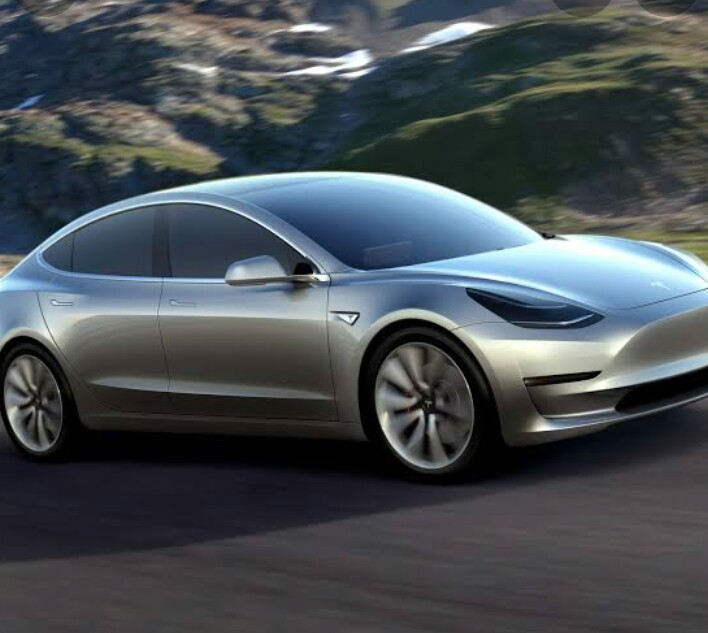

TESLA MODAL 3
Birds-eye view of red Model 3 on gray asphalt
Model 3
0
1
2
3
s
0-60 mph*
358
mi
Range (EPA est.)
AWD
Dual Motor
Order Now
Next
Safety
Built for Safety
Safety is the most important part of every Tesla. We design our vehicles to exceed safety standards.
5-Star Rating
Model 3 achieved NHTSA 5-star safety ratings in every category and subcategory.
Top Safety Pick+
Model 3 received the IIHS Top Safety Pick+ award, with top ratings in all crashworthiness and front crash prevention categories.
Learn More
Order Now
Model 3 safety hero imageImpact ProtectionRigid StructureVery Low Rollover Risk
Red Model 3 driving down a mountainside road

5
6
7
s
Quickest acceleration—from zero to 60 mph* in as little as 3.1 seconds
162
mph
Improved handling and aerodynamics allow for a top speed of 162 mph
AWD
Dual Motor All-Wheel Drive instantly controls traction and torque, in all weather conditions
Model 3 comes with the option of dual motor all-wheel drive, 20” Überturbine Wheels and Performance Brakes for total control in all weather conditions. A carbon fiber spoiler improves stability at high speeds, all allowing Model 3 to accelerate from 0-60 mph* in as little as 3.1 seconds.
An expansive Glass Roof provides more headroom and UV protection
The inside of Model 3 is unlike any other car. You can use your smartphone as a key, and access all driver controls in the central 15-inch touchscreen. The all-glass roof extends from front to back, creating a sense of openness from every seat.
Interior
Built Around the Driver
Learn More
Order Now
Model 3 Specs
Performance
Long Range AWD
Rear-Wheel Drive
Compare
Battery
Long Range
*Acceleration
3.1 s 0-60 mph
with rollout subtracted
Range
315 miles (EPA est.)
Drive
Dual Motor All-Wheel Drive
Seating
5 Adults
Wheels
20"
Weight
4,048 lbs
Cargo
23 cu ft
Displays
15" Center Touchscreen
Supercharging Max/ Payment Type
250 kW max; Pay Per Use
Onboard Charger Max
11.5 kW max (48A)
Warranty
Basic Vehicle - 4 years or 50,000 mi, whichever comes first
Battery & Drive Unit - 8 years or 120,000 mi, whichever comes first
Owner's Manual
Experience Model 3
Order Now
Compare
Certain high data usage vehicle features require at least Standard Connectivity, including maps, navigation and voice commands. Access to features that use cellular data and third-party licenses are subject to change. Learn more about Standard Connectivity and any limitations.
Return to page top
MODEL 3
SAFETY
PERFORMANCE
ALL-WHEEL DRIVE
RANGE
AUTOPILOT
INTERIOR
SPECS
ORDER
CLICK TO GO TO HOME PAGE